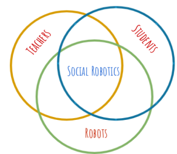

Abstract
 Most autistic children have prevalent problems during gross motor development. Children with deficient gross motor skills predominantly tend to develop Developmental Coordination Disorder(DCD). Panacea for DCD is to conduct physical and occupational therapy sessions for students. Autism educators encounter numerous challenges while conducting these therapy sessions. It is physically and mentally taxing for the instructors to conduct therapy sessions. Also, most autistic students hesitate to participate in therapy due to lack of motivation. Hence these therapy sessions are not found to be sufficiently effective. Social robotics is a field of robotics where robots are programmed to aid teachers in day to day teaching. Robots are enabled to interact with students and help them learn better. Drones, as a part of social robotics, were deployed for the first time in autism therapy sessions. The aim was to evaluate the benefits of using Drones as an interacting tool between the teachers and students for the betterment of these therapy sessions. A pre-post study was conducted to observe how Drones can help overcome the challenges faced by teachers to conduct these sessions effectively. The results of this study show that the Drone inclusive therapy sessions have proved to demonstrate significant benefits to the focused students who participated in this intervention with Drones.
Gross motor skills(GMS) and its importance
Gross Motor Skills (GMS):
Skills those which require whole body movement and which involve the large (core stabilising) muscles of the body to perform everyday functions, such as standing and walking, running and jumping, and sitting upright at the table. They also includes eye-hand coordination skills such as ball skills (throwing, catching, kicking) as well as riding a bike or a scooter and swimming.
Importance of Gross motor skills:
Gross motor abilities also have an influence on other everyday functions. For example, a child’s ability to maintain appropriate table top posture (upper body support) will affect their ability to participate in fine motor skills (e.g.writing, drawing and cutting) and sitting upright to attend to class instruction, which then impacts on their academic learning.
What is GMSD?
It is observed when a child is not rolling, crawling, walking, or doing other gross motor activities when the child is at the right age to do those things.
GMSD observed in Autistic kids:
Studies have shown autistic children usually have varying degrees of difficulty with fine and gross motor skills.These are diffi-
culties are believed to exist due to the neurological differences in autistic children and their challenges with sensory processing. Autistic kids with GMSD are observed with low energy levels, poor posture control, seem tired or lethargic and take longer to respond to stimuli around them. On the longer run, they tend to develop a condition called Developmental Coordination Disorder (DCD). DCD is a disorder that’s defined as an impairment in the learning of coordination and motor skills. The challenges of DCD impact many aspects of life.
Therapy for GMSD:
Early intervention with Physical and Occupational therapy is the primary treatment for GMSD. These therapy sessions involve
a set of exercises and physical activities on a daily basis.
Interaction with Institution where study was conducted
Challenges while conducting therapy sessions:
Students with low compliance are unable to follow a given instruction by the teacher. Teachers tend to physically help the students perform these exercises. Despite assigning one teacher for
every two students, it is still arduous for the teacher to complete a single therapy session. The physical and mental efforts put in by the teachers during therapy sessions are exhausting.
Students are often seen to be disinterested to perform any physical task. They lack imitation skills to even follow the teacher performing the exercises. Hence, teachers find it highly
challenging to motivate students to perform any given physical task.
Students lack focus and often lose eye contact with the teacher during therapy sessions. They often get diverted during sessions, due to which they fail to complete a cycle of an exercise. Because of this diverted attention, the efforts of the students to perform exercises turn out
to be futile and ineffective.
Students find it challenging to even sit or stand on command. Teachers have to verbally prompt commands several times to spawn a reaction from the student. Often, teachers themselves end up
physically aiding the students in order to motivate them to perform better.
Students are often found to be lethargic and disinterested during therapy sessions. While performing therapy, they often get easily fatigued. Due to lack of stamina, they fail to complete a cycle of exercises.
Success Stories
Student I - Exercise became fun with Drones
Diagnosis: Student I is diagnosed with ADHD and MR (for further read) . He is a cognitively bright student but has behavioral issues.
Regular GMS sessions: He displays reluctance and disinterest to participate, and he prefers to be in isolation during these sessions.
Drone sessions - He is a tech savvy student who is naturally drawn towards any electronic gadgets and hence was easily motivated to engage himself in gross motor session with Drones.
Here’s a short video of his teacher narrating his response to Drone therapy sessions
Student II - Started to sprint because of the Drone
Diagnosis: Student II is diagnosed with Autism with ADHD (for further read).
Regular GMS sessions: He is found to under-perform regularly because of his lack of focus and his physical developmental delay,due to this he maintains a clumsy posture and has difficulties sprinting.
Drone sessions - Pranav found the Drone to be a great stimuli and he often enjoyed performing exercises during Drone sessions. He used to attempt to chase the Drone, thus helping him to sprint on his own. Here’s a short video of Pranav’s teacher narrating his re-
sponse during Drone therapy sessions (Pranav’s video).
Student III - The one who lifts her neck to see the Drone
Diagnosis: Mythri is diagnosed with Autism Spectrum Disorder.(for further read).
Regular GMS sessions: She has poor posture control and is often found slouching. Due to her low stimuli and compliance levels, it requires great effort and time for the teachers to make her perform gross motor exercises.
Drone sessions - Mythri finds the Drone to be a stimuli and performs these exercises with great joy as she is fond of the down wash of the propellers below the Drone (similar to standing under a fan). Hence she automatically moves her neck around (Physio therapy) gazing at the Drone. Here’s a short video of Mythri’s teacher narrating her response during Drone therapy sessions (Mythri’s video)
Conclusion
Conclusion and Future work
Drone Tech:
Usage of Drones for autism intervention has been attempted for the first time in this study. Drones were never used as a tool to aid therapy sessions. Moreover since these Drones are programmed to function autonomously, there is no dependency of a pilot to be present during these therapy sessions.
Small scale study:
Since there was no relevant literature available, a ’pre and post study’ was conducted to design the overall structure for Drone therapy sessions. The overall engagement of all the students responding to the Drones were pretty insightful. But for a focused study, we narrowed down to seven students. The elementary exercises which were included as a part of the Drone therapy sessions were to answer three key questions. The success stories addresses these questions constructively as follows.
1. Can Drones spawn some interest among autistic students with GMSD?
Yes, in fact all the seven students selected for this small scale study were motivated to perform exercises; the reason being that the Drone was a great reinforcer and a successful stimuli.
2. Can Drones reduce the physical and mental efforts of the teacher conducting therapy?
If we observe the case of Mythri, the teachers used to spend exhaustive efforts to make the child perform exercises for the therapy. But during the therapy session with Drones it was observed that Mythri was able to mimic the Drone’s actuation or movements. The teacher had to only monitor and issue verbal prompts for her to perform these exercises.
3. Could Drones be effective and efficient in helping teachers to conduct therapy?
Each of the three students, part of the success stories, was benefited individually. Student I found the therapy session with Drones to be fun and hence used to look forward to attend them. Student II is student diagnosed with developmental delay and hence used to find difficulties in sprinting. He was found to attempt sprinting while he attended therapy session with Drones. Also the Drone was a successful positive reinforcer for him to look forward to therapy sessions.
Student III has a significantly bad neck posture where she is often found slouching or gazing towards the ground at most times. She is instructed to perform physiotherapy regularly which is critical for her overall posture. The teacher’s efforts to conduct her physiotherapy is futile. But during Drone sessions Mythri was found to gaze up to the Drone and effortlessly perform the physiotherapy exercises.
Future Work
This small scale study provides assurance to conduct a larger scale study with more focused students and increased number of Drone therapy sessions to present better results. The current design and structure of Drone therapy session are easily replicable. If the design of Drone therapy sessions could be personalised by trying to address each individual student’s disability, it can definitely be proven to be more effective. We could also improve and explore additional autonomous capabilities of mini and nano Drones.